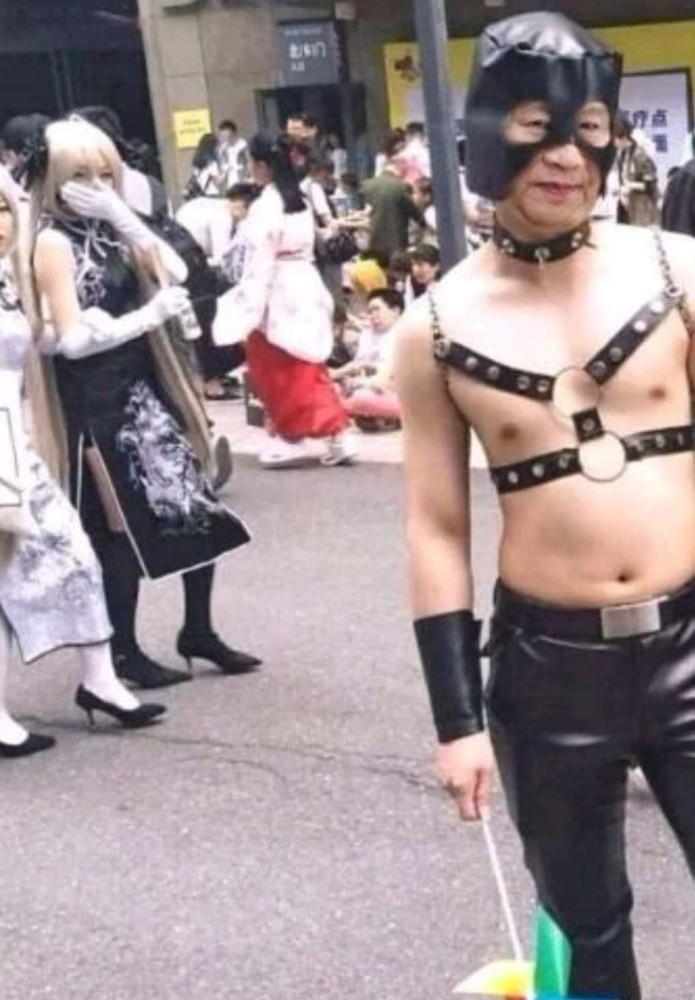

Home>Why these websites are sensitive
Pourquoi sensible ? Bien sûr, la photo de profil de Xi Jinping est très sensible sur l'Internet chinois, et même si les internautes chinois citent des images des médias d'État chinois, cela sera également censuré.
Photo du vice-président Wang Qishan
Les informations faciales de ces dirigeants nationaux et de certaines personnes qui ont été bannies de tout Internet sont enregistrées dans un certain système de censure. Une fois ces images utilisées, elles seront censurées et, dans les cas graves, convoquées par le poste de police.
Le système de reconnaissance faciale chinois est très bien développé. Dans le commerce, les gens peuvent effectuer des paiements hors ligne simplement en scannant leur visage, sans avoir besoin de téléphones portables ou de cartes bancaires.
Au niveau national, en raison de l'impact des personnes portant des masques pendant l'épidémie, il est désormais possible d'identifier des informations personnelles à travers les yeux.
Comment éviter la censure ? Vers 2015, l'auto-média chinois s'est développé très rapidement, de sorte que certaines plateformes en ligne à cette époque acceptaient des vidéos très vulgaires et lourdes pour attirer du trafic, et Lao Ba était l'un des créateurs. Célèbre pour aller aux toilettes pour manger de la merde, cette décision a suscité une large attention et a fait de lui une sensation instantanée sur Internet.
Lorsque le pays a commencé à prêter attention aux problèmes de santé d'Internet, il a naturellement été la première cible à être éliminée, son compte a donc été interdit.
Il est donc passé à une autre plate-forme en ligne et a commencé à publier des vidéos de manger au moins de la nourriture en ligne.
Mais cela n'a pas duré longtemps, et lorsqu'il a été banni, il a choisi de porter un masque pour éviter un examen minutieux, d'où le masque vient dans les nouvelles.
De même, le fait de porter un masque ne lui a permis de survivre qu'un temps. Après avoir été nommé et critiqué par les médias d'État chinois, il a été bloqué par toute la plateforme du réseau. Il ne pouvait plus devenir un auto-média. À l'heure actuelle, il n'y a qu'un très petit nombre de ses propres vidéos sur l'Internet chinois, ainsi que quelques œuvres vidéo étendues basées sur ses symboles de réseau.
Un autre exemple est l'athlète d'arts martiaux mixtes Xu Xiaodong, qui a été banni pour ses propos liés au défilé de Hong Kong en 2019, il a donc dû porter de la peinture de camouflage sur le visage pour participer à la compétition de combat.
Bien que ces deux méthodes ne soient pas nécessairement efficaces, on ne peut nier qu'il s'agit d'un acte fait pour éviter la censure. J'ai donc utilisé une photo d'un cosplayeur du Comic-Con, et essayé de désensibiliser l'image, car mon Photoshop n'est pas très bon, mais cela n'affecte pas la compréhension du public.
